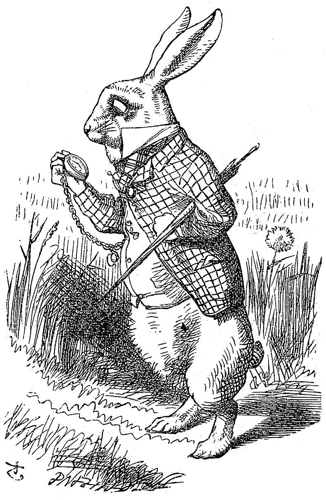

✒ ✒ ✒
CHARLES LUTWIDGE DODGSON · 1832–1898
Lewis Carroll
Lecturer in mathematics at Christ Church, Oxford, by day; teller of impossible stories by golden afternoon. He wrote the book for one Alice, illustrated it with another man's genius, and signed it with a name that wasn't his.

✒ ✒ ✒
A LIFE IN DATES
The Man
logician, photographer, stammerer, immortal
Dodgson published mathematics under his own name and nonsense under Carroll's — as if the two halves of one mind needed separate signatures. The logician wrote on symbolic logic and voting paradoxes; the storyteller filled a book with crooked reasoning so precise it parses.
John Tenniel, Punch's great cartoonist, cut all ninety-odd engravings and guarded them jealously — legend says he refused the sequel's Jabberwock chapter until Carroll cut a whole episode. The pictures won as surely as the words: nobody has ever successfully re-illustrated Alice since.
“What is the use of a book without pictures or conversations?”— Alice, opening line, stating the house rules